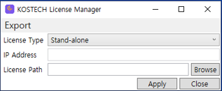
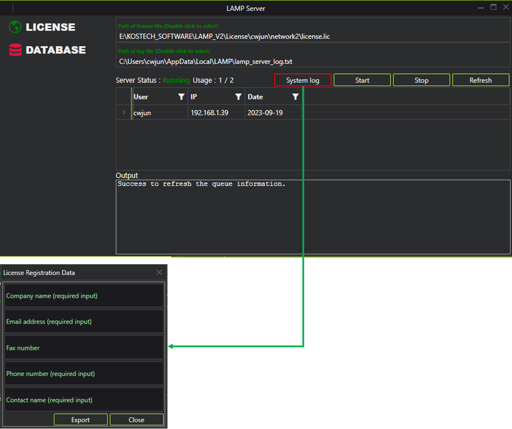
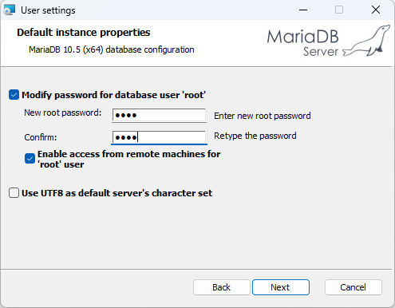
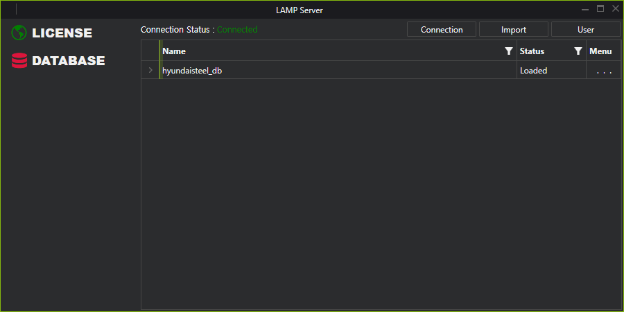

시작하기
1. Introduction
LAMP(LS-Dyna Advanced Material Platform)는 한국시뮬레이션기술에서 개발하고 있는 프로그램으로 LS-Dyna 사용자들이 재료 물성 카드를 생성 및 관리할 수 있도록 다양한 기능들을 제공하여 LS-Dyna 해석 소프트웨어 활용에 편의성을 제공합니다. LAMP는 현재 한국시뮬레이션기술에서 LS-Dyna를 구매하고 유지보수를 유지하고 계시는 고객들에게 제공되고 있습니다.
현재 LAMP에서 사용할 수 있는 기능은 다음과 같습니다.
1.1 시험데이터를 이용한 Steel 계열 LS-Dyna 물성 카드 생성
시험 raw 데이터의 Curve Fitting
Ludwick, Swift, Voce, Kim-Tuan, Mixed Swift-Voce 모델 사용 가능
Johnson-Cook 모델의 strain rate를 고려한 Curve Fitting
생성된 물성 데이터의 데이터베이스 저장
1.2 시험데이터를 이용한 LS-Dyna Hyperelastic 물성 카드 생성
MOONEY-RIVLIN (MAT27), HYPERELASTIC Order 1 ~ 3 (MAT77), OGDEN Order 1 ~ 3 (MAT77) 사용 가능
1.3 개인 물성 관리를 위한 데이터베이스 제공 및 현대제철 물성 데이터베이스 제공
MySQL 기반의 MariaDB를 이용한 데이터베이스 제공
사용자 개인 물성 저장 및 출력 인터페이스 제공(일부 LS-Dyna 물성 카드만 지원)
Steel 계열의 현대 제철 물성 데이터 제공
1.4 GISSMO 물성 생성을 위한 인터페이스 기능
GISSMO 물성 생성을 위한 LS-OPT 및 LS-DYNA의 시뮬레이션 인터페이스 제공
LS-OPT를 이용한 GISSMO 물성 파라미터의 최적화 및 Mesh Regularization 가능
Triaxiality 계산 기능 및 Triaxiality Curve 생성을 위한 수치 도구 제공
LS-Dyna에서 사용 가능한 GISSMO 물성 카드 생성
2. Installation
LAMP 설치를 위해 아래 링크에서 다운로드 받은 후에 압축을 해제 합니다. 압축 해제 후 LAMP Installer.exe 파일을 실행하면 아래와 같은 설치 화면이 표시됩니다.

2.1 경로 변경
설치 경로는 Install directory 우측 아이콘을 클릭 하여 변경 할 수 있습니다.
2.2 LAMP Server
LAMP에서 제공하고 데이터베이스 및 네트워크 라이선스를 관리 할 수 있는 프로그램입니다. 데이터베이스 기능을 사용하기 위해서 반드시 설치 하여야 합니다.
2.3 LAMP
한국시뮬레이션기술에서 LS-Dyna 고객들에게 제공되는 프로그램으로 LS-Dyna 재료 물성 카드의 보다 쉽고 편리한 생성 및 관리 등의 기능을 제공합니다.
3. License 발급
LAMP 설치 이후에 LAMP를 사용하기 위해서는 한국시뮬레이션기술에서 라이선스를 제공받으셔야 합니다. 현재 LAMP 개발 진행중인 소프트웨어로 한국시뮬레이션에서 LS-Dyna를 구매하고 유지보수를 유지하고 계시는 고객들에게 2개월동안 사용가능한 라이선스가 발급됩니다. 로컬 PC 1대에 사용가능한 stand-alone license와 서버 PC 1대에 license를 위치 시키고 1대 이상의 client PC에서 사용가능한 network license를 사용할 수 있습니다. 라이선스 발급은 라이선스 파일이 위치할 PC의 로그 정보를 한국시뮬레이션기술에 제공해주시면 해당 PC에 대한 라이선스를 발급해드립니다.
3.1 Stand-alone license
개인 local PC 1대에 LAMP를 사용하기 위한 라이선스로 LAMP 설치 시 함께 설치되는 LicenseManager에서 로그 파일을 생성 할 수 있으며, 발급되는 라이선스를 등록할 수 있습니다.
로그 파일 생성
LicenseManager를 실행하고 상단 Export 메뉴에서 Log file 메뉴를 클릭하면 생성되는 창에서 요구되는 정보를 입력하고 Save log file 버튼으로 log 파일을 저장 후 한국시뮬레이션기술에 로그 파일을 보냅니다.

라이선스 파일 등록
제공되는 라이선스 파일은 LicenseManager에서 등록을 해야 합니다. LicenseManager를 실행 하시고 License Type을 Stand-alone으로 선택합니다.
License Path의 Browse를 클릭한 후 제공된 라이선스 파일을 선택하고 Apply를 눌러 라이선스를 등록합니다.

3.2 Network license
로그 파일 생성 (서버 PC)
네트워크 라이선스를 발급받기 위해서는 LAMP Server에서 로그 파일을 생성해야 합니다.
LAMP Server를 실행하고 LICENSE 탭을 선택합니다.
System log 버튼을 클릭합니다.
필수 정보(Company name, Email address, Phone number, Contact name) 입력 후 Export 버튼으로 파일 생성

라이선스 파일 등록 (서버 PC)
제공되는 라이선스는 서버 PC에서 LAMP Server를 통해 등록합니다.
LAMP Server를 실행하고 LICENSE 탭을 선택합니다.
Path of license file 입력란에 제공받으신 라이선스 파일 경로를 입력 및 더블 클릭하여 선택합니다.
Start 버튼을 클릭 후 Server Status의 Text가 Running으로 표기되는지 확인합니다.
라이선스 서버가 제대로 시작되지 않는다면 lamp_server_log.txt 파일과 함께 KOSTECH에 문의주시기 바랍니다.
Clinet PC에서 라이선스 활성화
서버에 등록된 라이선스를 클라이언트 PC에서 사용하기 위해서 LicenseManager를 통해 등록합니다.
LicenseManager를 실행합니다.
License Type을 Network로 선택하고 서버의 IP Address를 입력 후 Apply 클릭합니다.
완료되었다는 메세지가 표시될 때까지 기다립니다.
Network port of license server
LAMP 라이선스 서버는 기본적으로 27015 포트를 사용합니다. Client PC에서 라이선스 활성화가 되지 않는다면
방화벽 설정을 확인하시기 바랍니다. 현재 포트 번호를 변경하여 사용하는 것은 지원되지 않습니다.(향후 추가 예정)
4. 데이터베이스 설정
LAMP에서 제공하는 데이터베이스는 MariaDB에서 테스트 되었으며, 사용을 위해 서버 PC에 MariaDB를 설치 해야 합니다.
4.1 MariaDB 설치
설치를 위해 아래 경로에서 다운로드 받고 설치 합니다. MariaDB 설치 과정에서 root 사용자에 대한 비번을 입력 하고 ‘Enable access from remote machines for ‘root’ user에 체크 합니다.
https://dlm.mariadb.com/1913768/mariadb/mariadb-10.5.13/winx64-packages/mariadb-10.5.13-winx64.msi

4.2 현대제철 물성 추가
LAMP는 현대제철의 Steel 계열의 물성을 제공합니다. 현대제철 물성을 사용하기 위해서는 제공되는 현대제철 물성을 데이터베이스에 추가하여야 합니다.
LAMP Server 실행 후 DATABASE 탭을 클릭합니다.
Connection을 선택하고 표시되는 Database Connection 창에서 정보를 입력하고 Connect 버튼을 클릭합니다.
Connection Status에 Connected 텍스트로 표시되는 것을 확인합니다.
Import 버튼을 클릭 후 LAMP Server 설치 경로의 data 폴더에 있는 hyundaisteel_db.sql 파일을 선택합니다.
hyundaisteel_db 데이터베이스 항목이 추가 되었는지 확인합니다.
Menu 열의 … 버튼을 클릭 후 Load 버튼을 클릭합니다.
Status 열의 텍스트가 Unloaded에서 Loaded로 변경되었는지 확인합니다.
Tip
LAMP Server의 기본 설치 경로는 C:\KOSTECH\LAMPS 입니다.
LAMP에서 현대제철 물성을 출력하는 방법은 현대제철 물성 출력의 내용을 확인하세요.

5. LAMP 메인 User Interface